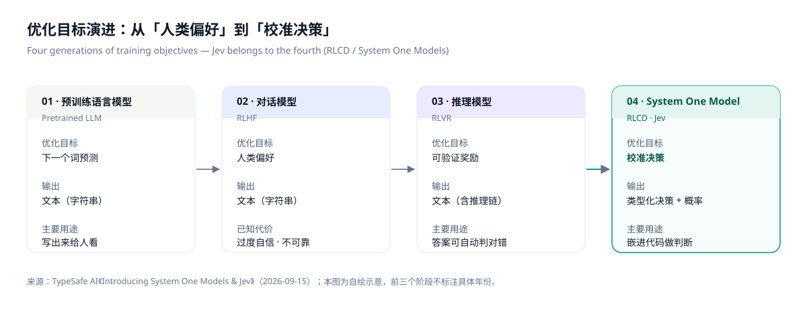
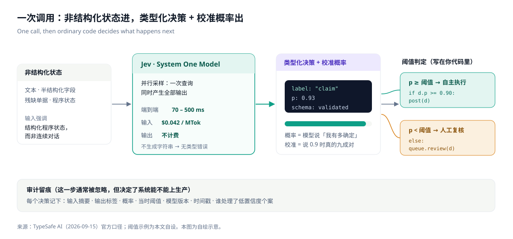
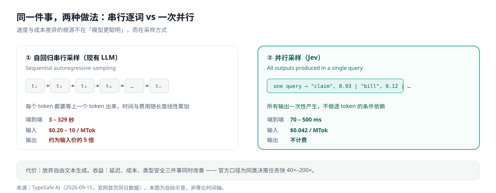
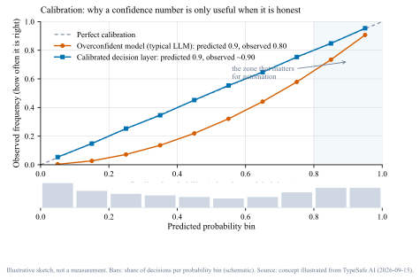
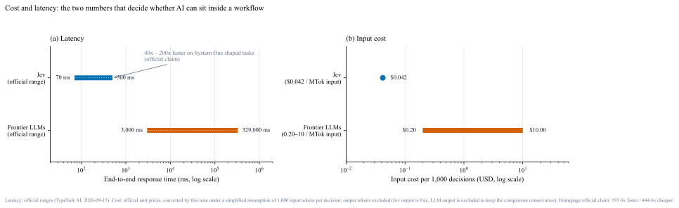
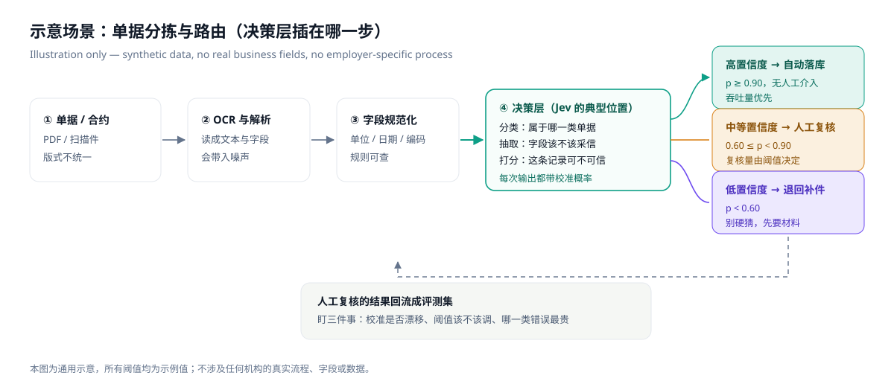

它不是「更聪明的分类器」，而是一类新的接口：非结构化状态进，带校准概率的类型化决策出。本文拆开它的定义、机制、与 LLM 的差别、能落地的位置，以及哪些话目前只能算官方口径。 Not a smarter classifier — a new interface: unstructured state in, typed decisions with calibrated probabilities out.
全文只用两类原材料：TypeSafe AI 的官方发布文（2026-09-15）与官网首页，访问日期 2026-09-25。凡属官方说法，我都标成「官方口径」；凡属我的推导，用黄色卡片标成「推断」；凡属偏好与判断，用紫色卡片标成「观点」。官方口径 ≠ 已验证事实，这一点在第十节展开。 Two sources only: the vendor's launch post (2026-09-15) and its homepage, accessed 2026-09-25. Vendor statements are labelled as claims, derivations in amber, opinions in violet. A vendor claim is not a verified fact — see section 10.
我在做文档识别与流程自动化的过程中反复遇到同一个卡点：规则的边界太清楚，模型的输出又太自由。 Working on document understanding and process automation, I kept hitting the same wall: hand-written rules are too brittle, while model output is too free-form.
用规则写「什么算 A 类单据」，遇到版式变化就失效；用 LLM 读，判断质量更好，但它返回一段文本，还是要解析、校验、处理它偶尔越界的情况——而且慢、贵、结果不稳定。中间那一格（判断带不确定性，但输出必须严格结构化）一直缺一个合适的接口。 Rules break when the layout changes. An LLM reads better, but returns text: it still has to be parsed and validated, it sometimes goes out of range, and it is slow, costly and inconsistent. The middle cell — a judgement that carries uncertainty but returns strictly structured output — had no good interface.
Jev 声称要填的就是这一格。这篇文章的目的不是替它背书，而是把「它到底提供什么、边界在哪、该怎么判断要不要用」讲清楚。 Jev claims to fill exactly that cell. This note is not an endorsement: it tries to pin down what it actually offers, where its boundaries are, and how to decide whether to use it.
官方定义（原文）：Jev 是一个 System One Model——「a new class of frontier models built to make fast, structured decisions that software can use directly」，一句话版本是「a frontier-intelligence function call: unstructured state in, typed probabilistic decisions out」。[1] Official definition: Jev is a System One Model — "a new class of frontier models built to make fast, structured decisions that software can use directly", summarised as "a frontier-intelligence function call: unstructured state in, typed probabilistic decisions out".[1]
配套的技术主张有三条：新的模型架构、并行采样器（parallel sampler）、以及一套新的训练方法 RLCD（Reinforcement Learning for Calibrated Decisions，面向校准决策的强化学习）。官方把它的定位放在既有两代之后：RLHF 优化人类偏好产出对话模型，RLVR 用可验证奖励产出推理模型，RLCD 则直接以「带校准概率的决策」为训练目标。[1] Three technical claims accompany it: a new architecture, a parallel sampler, and a new training method, RLCD — Reinforcement Learning for Calibrated Decisions. The vendor places it after two earlier generations: RLHF optimised human preference into chat models, RLVR used verifiable rewards into reasoning models, and RLCD trains directly for calibrated decisions.[1]

这一节比上一节重要。新产品发布时，误读通常发生在边界上。 This section matters more than the previous one: misreadings usually happen at the boundaries.
「不生成字符串」看起来是能力上的退让，实际上是三个收益同时到手的交易：不做逐 token 的自回归 → 延迟与成本同时下降；输出空间有限 → 类型错误与幻觉的空间被压缩；概率内建 → 可以做阈值。三者是同一次设计取舍的三个侧面，而不是三种独立功能。 Giving up strings is not simply a sacrifice: it is one trade that yields three things at once — no autoregressive decoding (lower latency and cost), a finite output space (little room for type errors or hallucination), and a built-in probability (thresholds become possible). One design choice, three faces.
把一次调用摊开，只有四步：把状态（文本、残缺字段、程序状态）交给模型 → 模型返回一组类型化的决策，每个都带概率 → 你在代码里设阈值决定谁自动执行 → 低置信度的走人工，并留下记录。 One call, four steps: hand over the state (text, partial fields, program state); the model returns typed decisions each carrying a probability; your code applies a threshold to decide what runs automatically; low-confidence cases go to a human, with a record kept.

现有 LLM 是自回归的：一个 token 一个 token 地生成，每个都依赖前一个，时间和费用随输出长度线性累加。官方称 System One Models 用并行采样——在一次查询里同时产生全部输出，所以不随「输出个数」累积延迟。[1] Existing LLMs are autoregressive: one token at a time, each conditioned on the last, so time and cost accumulate with output length. System One Models instead use a parallel sampler: all outputs are produced within a single query, so latency does not accumulate with the number of outputs.[1]

官方对这件事的表述很直接：如果一个模型有 95% 的情况下能做对，但从不说自己什么时候处在错的 5% 里，那么这个任务就没法被自动化。[1] The vendor puts it plainly: if a model does a task correctly 95% of the time but never signals which 5% it is wrong on, that task cannot be automated.[1]
「校准」的含义是：模型说 0.9 的那一批判断里，实际对的比例接近 90%。做不到这一点，概率只是一个数字，不能作为阈值依据。校准的常用检验工具是可靠性曲线——横轴是模型声称的置信度，纵轴是实际正确率，理想情况是 45° 对角线。 Calibration means: among judgements rated 0.9, roughly 90% are actually right. Without it, a probability is just a number and cannot carry a threshold. The standard check is a reliability diagram — claimed confidence on the x-axis, observed accuracy on the y-axis, the diagonal being perfect.

校准的价值随「错误代价」上升而上升。在可以方便人工复查的场景里，不校准只是多花人力；在延迟敏感、或者判断被埋在依赖链深处的场景里，不校准等于把不确定性当成确定性来用——这才是官方所说的「deal-breaker」。[1] Calibration matters more as the cost of error rises. Where a human can easily review, poor calibration merely costs labour; where latency matters or the decision sits deep in a dependency chain, treating uncertainty as certainty is the deal-breaker the vendor describes.[1]
官方价格口径：输入 $0.042 / MTok（即每十亿输入 token 42 美元），输出不计费；延迟 70–500 ms。对照的现有 LLM 区间是输入 $0.20–10 / MTok、输出约为输入价的 5 倍，端到端 3–329 秒。[1] Vendor pricing: $0.042 / MTok input (i.e. $42 per billion input tokens) with output free, at 70–500 ms. The comparison range for existing LLMs is $0.20–10 / MTok input, output about 5x the input price, and 3–329 s end to end.[1]
为了让这两组数字可比较，我做了最简单的换算：假设每次决策消耗 1,000 个输入 token，那么 1,000 次决策正好用掉 1 MTok，可以直接用单价读——LLM 是 $0.20–10.00，Jev 是 $0.042。这个换算剔除了输出 token（对 Jev 恰好是 0，对 LLM 是偏保守的算法），假设是本文的，不是官方的。 To make the two comparable I applied the simplest possible conversion: assume 1,000 input tokens per decision, so 1,000 decisions consume exactly 1 MTok and the unit price can be read directly — $0.20–10.00 for LLMs, $0.042 for Jev. Output tokens are excluded (exactly zero for Jev, and conservative for LLMs). The assumption is mine, not the vendor's.

下面这个流程纯粹是示意：我不引用任何真实业务数据，数字都是编的，只用来说明「决策层插在哪一步、阈值怎么起作用」。 The flow below is purely illustrative: no real business data, invented numbers, only there to show where a decision layer sits and how thresholds work.
设想一批版式不统一的单据：OCR 会带进噪声，字段有时缺、有时串行。传统做法是写一堆规则来判定类型与完整性；这里的做法是在规范化之后插一层决策：这属于哪一类（分类）、这个字段值能不能采信（打分）、缺的字段是不是必须退回补件（分支），每一项都带概率。 Take a pile of inconsistently formatted documents: OCR brings noise, fields are sometimes missing or misaligned. The conventional answer is a pile of rules. The alternative inserts a decision layer after normalisation: which category is this, is this field value trustworthy, and must it be sent back for more material — each with a probability.

这类场景的运营指标其实是两条线：自动执行覆盖率与错误率。阈值往下调，覆盖率上升、错误率也上升，同时人工复核量下降；往上调则相反。这本质上和风控里「覆盖率 vs 精度」的取舍是同一件事——所以真正要调的不是模型，是这条曲线上的取点。 Operating this kind of pipeline really means managing two curves: coverage of automatic execution and error rate. Lower the threshold and coverage rises along with errors while review volume falls; raise it and the reverse. It is the same trade-off as precision versus coverage in risk control — the thing you tune is the point on that curve, not the model.
| 现有 LLMExisting LLM | 经典分类器Classical classifier | Jev（官方口径）Jev (vendor account) | |
|---|---|---|---|
| 优化目标Objective | 人类偏好 / 可验证奖励Human preference / verifiable reward | 训练集上的损失最小化Loss minimisation on training data | 校准决策（RLCD）Calibrated decisions (RLCD) |
| 输出Output | 字符串，需解析校验Strings; parse and validate | 标签（+ 未校准分数）Label (+ uncalibrated score) | 类型化值 + 校准概率Typed value + calibrated probability |
| 采样Sampling | 串行，逐 tokenSequential, token by token | 一次前向One forward pass | 一次查询并行产生全部输出All outputs in one query |
| 延迟Latency | 3 – 329 s | 微秒 – 毫秒µs – ms | 70 – 500 ms |
| 输入成本Input cost | $0.20 – 10 / MTok | ≈ 0（本地）≈ 0 (local) | $0.042 / MTok |
| 概率可信度Trust in the probability | 过度自信且不一致Overconfident, inconsistent | 需另行校准Needs separate calibration | 校准为训练目标Calibration is the training target |
| 类型错误Type errors | 会发生，需容错Happen; needs handling | 不会（闭集）No (closed set) | 官方称不可能发生Vendor: impossible by construction |
| 适合Fits | 对话、写作、代码、开放问题Chat, writing, code, open problems | 标签空间小而稳定的任务Small, stable label spaces | 人工在环的流程、实时判断、大批量打分Human-in-the-loop flows, real-time decisions, bulk scoring |
| 不适合Does not fit | 需要确定性与延迟保证的链路Anything needing determinism and latency guarantees | 规则边界模糊、语义复杂的判断Fuzzy, semantically complex judgements | 需要自由文本或长链推理的任务Free-text generation or long reasoning chains |
注：第三列除延迟与成本外均为官方自述；官方同时承认类型错误的 0% 来自「schema matching is guaranteed」的机制保证，而非实测统计。[1][2] Note: column 3 is the vendor's own account; the vendor also notes the 0% type-error figure follows from a structural guarantee ("schema matching is guaranteed") rather than a measurement.[1][2]
这一节我尽量站到对面去写。目前关于 Jev 的全部公开信息都来自一家公司自己的叙述，而官方在同一篇里已经把该被质疑的地方标了出来——这点值得肯定，但也不能因此免除验证义务。 I have tried to argue the other side here. All public information on Jev comes from the company itself, and to its credit the vendor flags where scepticism is due — which does not remove the need to verify.
我目前没有 early access，因此以下都还没做过：① 用同一批数据把「提示词 + JSON」与「决策层」跑成对照；② 用可靠性曲线检查它声称的概率是否真的校准；③ 在长尾样本（版式异常、字段缺失）上看概率是否随难度下降；④ 记录 p50/p95 延迟而不是平均值。做完会写进「实测复现」那一篇。 I have no early access, so none of the following has been done yet: (1) a like-for-like comparison of prompt-plus-JSON against a decision layer on one dataset; (2) a reliability diagram to test whether the claimed probabilities are calibrated; (3) long-tail behaviour (odd layouts, missing fields) and whether confidence falls with difficulty; (4) p50/p95 latency instead of averages. Results will go into the benchmark note.
我认为 Jev 这类东西真正的意义不在「更准」，而在把不确定性变成可以写进代码的对象。过去两年我们一直在用「让模型更聪明」来解决可靠性问题，但可靠性其实是接口问题：如果输出没有概率、没有取值范围、没有审计记录，再聪明的模型也只能待在人的后面。 The real significance is not accuracy but turning uncertainty into something you can write code against. The last two years have tried to buy reliability with intelligence, but reliability is an interface problem: without probabilities, bounded outputs and an audit trail, even a brilliant model stays behind a human.
如果要判断这一类产品值不值得投入，我会先问三个问题：它会把我的哪一段人工流程变成机器流程（而不是「它能做什么」）；错误代价 vs 复核成本 是否划算；概率是否真的校准（这一条决定了前两条能不能成立）。三个问题答不上任何一个，就先只做离线跑分，别接进生产链路。 To judge whether a product like this is worth adopting, I would ask three questions first: which human step does it actually turn into a machine step (not what it can do in general); does the cost of error beat the cost of review; and are the probabilities genuinely calibrated — the third determines whether the first two hold. If any of them has no answer, keep it in offline scoring and out of production.
最后一句保留意见：目前的证据强度还不足以支撑采购决策。它值得的是两周的试点，不是一份年度合同。 One reservation to end on: the evidence so far is not strong enough to support a purchasing decision. It earns a two-week pilot, not an annual contract.
如果要把这类服务接进内部流程，我整理了一份提问清单。每条都附上「为什么要问」，方便直接拿去开会问供应商。 If a service like this is to enter an internal pipeline, here is the list of questions I would bring to the vendor, each with the reason it matters.
Aylon (2026). Jev 与 System One Models：把 AI 变成代码里的一个判断. Notes, v1.0. https://aayloo.github.io/notes/jev-system-one-models/
| 版本Version | 日期Date | 改动Change |
|---|---|---|
| v1.0 | 2026-09-25 | 初版。依据官方 2026-09-15 发布文与官网首页；本文无实测数据，待拿到访问权限后补「实测复现」一篇。 First version, based on the 2026-09-15 launch post and homepage. No first-party measurements yet; a benchmark note will follow once access is available. |